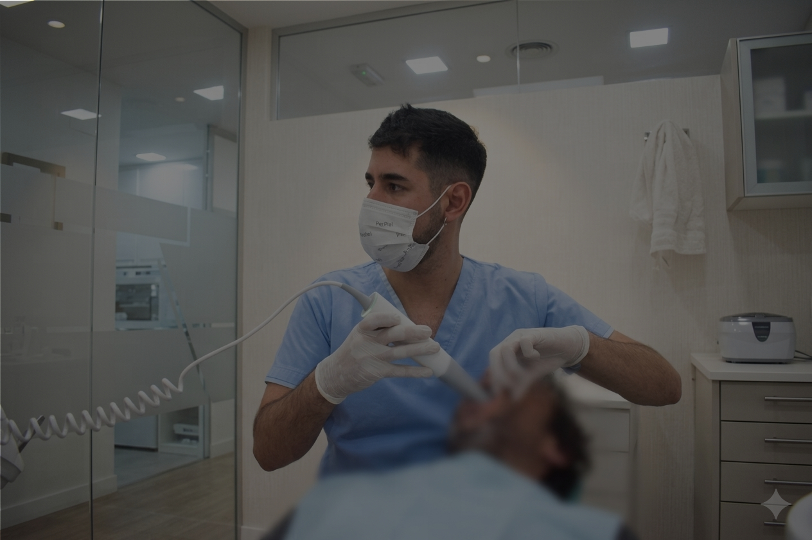

recupera el confort y la seguridad de una sonrisa que sevea y se sienta verdadera
Od. Luciano Coca
Contactar por WhatsApp
Como trabajamos
stand by

Innovación
Equipamiento de última generación
Trabajamos con tecnología de vanguardia para garantizar diagnósticos precisos y tratamientos eficientes lorem.
Primera consulta
¿Querés empezar tu tratamiento?
Reservá tu turno y evaluamos juntos la mejor opción para tu sonrisa.
Agendar turno
Cómo trabajamos
Explicación paso a paso
Un recorrido simple y claro por cada etapa del tratamiento, desde la primera consulta hasta el resultado final.
VIDEO PENDIENTE
Preguntas frecuentes
Resolvé tus dudas
No existe un tratamiento único para todos. Primero evaluamos tu situación clínica, escuchamos tus deseos y objetivos y evaluamos las alternativas disponibles. A partir de eso podemos determinar qué opciones son adecuadas para tu caso
Tener poco hueso no significa que no puedas colocarte implantes. Existen alternativas para adaptar el tratamiento a las necesidades de cada paciente.
Existen alternativas con implantes que pueden permitir volver a tener tu dentadura de forma fija y más estable. La indicación depende de cada caso.
No. Las carillas son una alternativa para determinados casos estéticos. Primero es necesario evaluar dientes, encías, mordida y condiciones generales para determinar si son apropiadas.
Los procedimientos se realizan bajo anestesia y se planifican buscando que la experiencia sea lo más cómoda posible. Las molestias posteriores dependen del procedimiento realizado
Agendá tu visita
¿Te quedó alguna duda?
Consultanos en persona. Atendemos en Salta Capital y General Güemes.